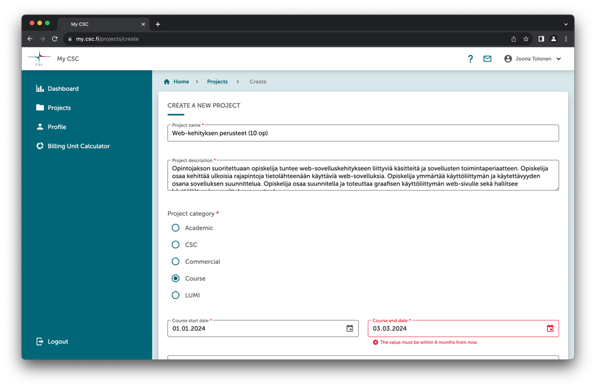
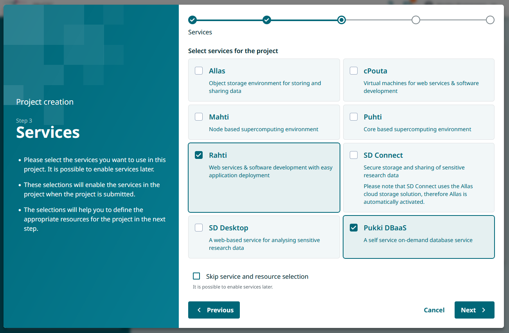
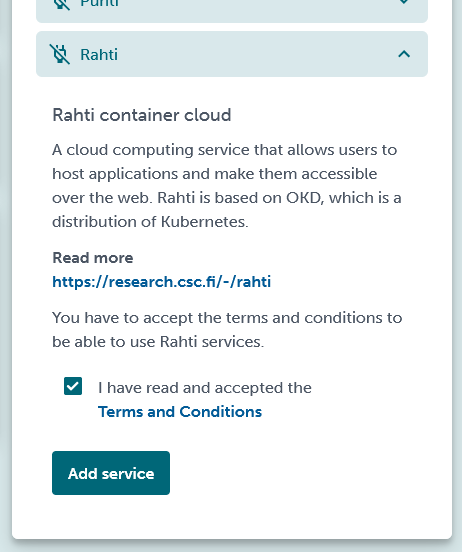
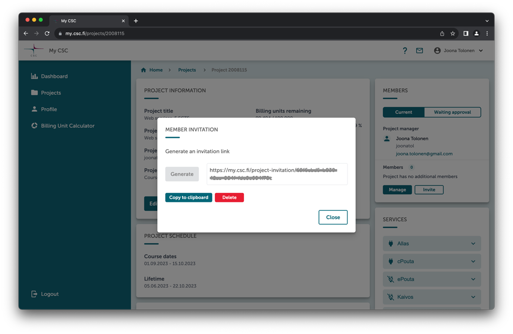

Kurssiprojektin käyttö
Rahti-projektien käyttö kurssiprojekteissa
Kurssiprojektin Rahti-projekteille asetetut resurssikiintiöt ovat niin niukat, että ne eivät riitä, jos Rahti-projekteja on useita.
Kursseilla onkin parempi käyttää opiskelijoiden itse perustamia opiskelijaprojekteja, joissa opiskelija itse toimii projektipäällikkönä. Myös ryhmäprojektit voidaan toteuttaa opiskelijaprojektissa, sillä opiskelijaprojektiin voi kutsua jäseniä samalla tapaa kuin kurssiprojektiinkin. Opiskelijaprojektin kiintiörajat ovat samat kuin kurssiprojektilla, ne riittävät normaalisti hyvin.
Kurssiprojektiakin voi käyttää, mutta silloin on syytä anoa kiintiörajojen kasvattamista.
Periaatteena on, että yhdelle kurssitoteutukselle perustetaan yksi MyCSC-projekti.
Opettaja toimii projektin projektipäällikkönä ja hallinnoi projektiin liitettyjä palveluja sekä projektin käyttäjiä.
Projekteja hallinnoidaan MyCSC-portaalin kautta. Palvelu löytyy osoitteesta https://my.csc.fi. Palvelun käyttäminen vaatii oman CSC-tunnuksen, joka on otettavissa käyttöön korkeakoulujen Haka-kirjautumispalvelun avulla (ks. luku Käyttäjätili).
Uuden MyCSC-projektin perustaminen
Uuden projektin pääsee luomaan näkymän vasemman reunan valikosta Projects ja sen takaa löytyvän sivun oikeasta yläkulmasta painamalla nappia New project. Painike avaa uuden projektin luontinäkymän.

Kurssiprojektista on hyvä huomioida seuraavat seikat:
- Projektikategoriaksi tulee valita Course.
- Kurssin päättymispäivä voi olla korkeintaan kuuden kuukauden päässä luontipäivästä.
- Kurssiprojekti on kertakäyttöinen. Sitä ei voi jatkaa, kopioida eikä siihen voi pyytää lisäresursseja. Oletusresurssi projektille on 100 000 BU:ta.
- Projekti ja kaikki sen resurssit poistetaan automaattisesti loppumisajan jälkeen.
- Kurssiprojekteja voi olla käynnissä yhtä aikaa useita.
- Kurssiprojektien palveluihin ei saa tallentaa henkilökohtaisia tietoja.
BU eli Billing Unit on laskennallinen yksikkö, jolla seurataan resurssien käyttöä projektissa. Käyttö, yksikön nimestä huolimatta, on korkeakoulujen henkilökunnalle ja opiskelijoille opetuskäytössä ilmaista. Lisätietoa BU:sta löytyy osoitteesta https://docs.csc.fi/accounts/billing/.
Palvelujen valinta
Projektin kautta projektin jäsenet pääsevät käsiksi CSC:n palveluihin. Oletuksena mitään palvelua ei ole liitetty projektiin, vaan projektipäällikkö valitsee haluamansa palvelut MyCSC sivuston kautta

Projektin palvelut valitaan palvelulistasta yksi kerrallaan.

Projektiin lisätyistä palveluista lähetetään kaikille projektin jäsenille sähköposti, jossa pyydetään hyväksymään palvelun ehdot MyCSC-sivustolla.
Kun halutut palvelut on valittu projektille ja käyttäjät ovat hyväksyneet palvelun käyttöönoton, voidaan niiden käyttö aloittaa.
Palvelujen konfigurointi
Kun projektille on valittu halutut palvelut, niiden käyttöönotto ja konfigurointi tapahtuu kunkin palvelun omalta sivustolta.
Opiskelijoiden lisääminen projektiin
Jos opiskelijat tarvitsevat suoran pääsyn palveluihin (esim. Rahti), heidän tulee liittyä MyCSC-projektin jäseneksi.
Projektipäällikkö (opettaja) lisää opiskelijat osaksi projektia, joko etsimällä heidät projektihallinnan Members-näkymässä CSC-tunnuksella tai lähettämällä opiskelijoille kutsulinkin.
Kutsulinkin voi generoida painamalla Invite painiketta ja lähettämällä linkin opiskelijoille esimerkiksi sähköpostilla tai lisäämällä sen Moodle-kurssin työtilaan. Linkillä kutsutut opiskelijat hyväksytään projektijäseneksi Members-näkymän Waiting approval valinnasta.

Kun opettaja on hyväksynyt opiskelijat projektin jäseneksi, tulee opiskelijoiden vielä hyväksyä MyCSC sivuston kautta projektiin valittujen palvelujen käyttöehdot.
Jos opiskelijat käyttävät pelkästään CSC ympäristöön pystytettyjä palveluja (esim. www-sivustot, SQL-palvelin, tms.), joissa on toteutettu oma käyttäjänhallinta, opiskelijan liittäminen CSC-projektiin ei ole välttämätöntä. Esimerkkinä tämmöisestä voisi olla opettajan pystyttämä Wordpress-sivusto ja johon opiskelijat kirjautuvat Wordpressiin tehdyillä käyttäjätunnuksilla.